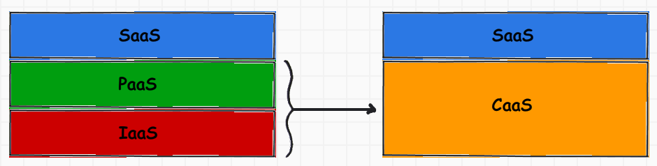

With the rise of Docker, the public cloud of tomorrow will be very different than today's; and we believe that the future of Container-as-a-Service is just around the corner. However, container lacks of the necessary isolation, which is crucial in a multi-tenant environment. Virtualization, on the other hand, is born for hardware-enforced isolation, though VM are inherently heavy, in both term of performance and image size.
Hyper is an open source project, founded by Xu Wang, Simon Xue and Feng Gao in 2014, with the goal to Make VM run like Container. Hyper combines the best from both virtualization and containers:
As such, we believe that with Hyper, we could see the beginning of Secure, Multi-tenant, Public Container-as-a-Service, and we are proud to be born and grow as an Open Source company, since 2014, from Beijing, China.